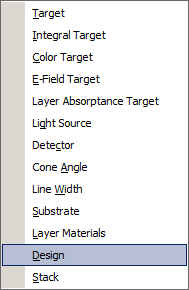

File Transfer
File Transfer
Navigation: OptiLayer Menu Commands > File Menu >
File Transfer
` <new_problem_directory.html>`__ ` <idh_menu_file.html>`__ ` <idh_select_directory.html>`__
The File Transfer option enables the exchange of data files between different Problem Directories (DS Mode) or Project Files (SF Mode). You can transfer Target, Integral Target, Color Target, Light Source, Detector, Cone Angle, Line Width, Substrate, Layer Material, Design, and Stack files as shown below

Data files are always transferred to the currently opened Problem Directory (DS Mode) or Project File (SF Mode). The File Transfer operation is carried out in two steps:
Before entering the File Transfer mode, you are asked to choose a data source directory in the Select Directory window (DS Mode) or Project File (SF Mode).
After selecting the Problem directory, the File Transfer dialog is opened.